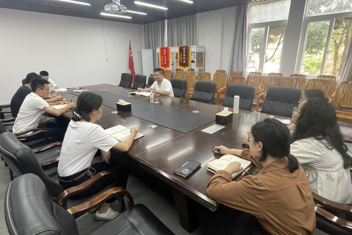
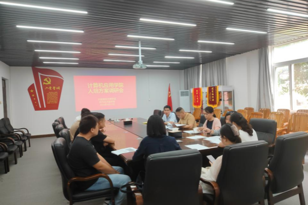
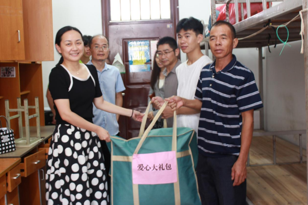
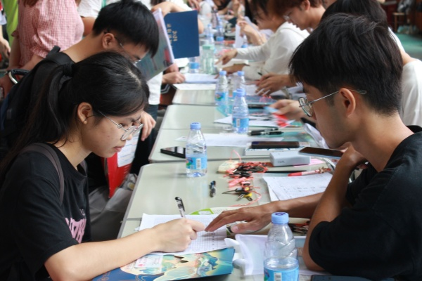

新闻动态News
更多

2024-09-30
计算机应用学院学工组召开国庆假期学生安全稳定工作会议
9月29日下午，计算机应用学院学工组在学院2206会议室召开国庆假期学生安全稳定工作专项会议，会议由学院党委副书记兼学工组组长陈平东主持，学院团委书记韦艳莎、全体辅导员参加会议。

2024-09-29
大数据技术教研室开展人培方案修订调研会
9月27日上午，我院大数据技术教研室于2206会议室开展大数据技术专业人培方案修订调研会，并邀请扶绥原住建局、工信局局长徐鹏专家参加此次会议。大数据技术教研室全体教师、软件技术教研室部分教师参加会议，此次会议由大数据技术教研室主任杜飚鸿主持。

2024-09-28
南宁分校党委副书记苏欣深入学生宿舍看望慰问我院2024级新生代表
9月9日，南宁分校党委副书记苏欣在学院领导班子的陪同下，前往我院新生宿舍看望慰问我院2024级新生代表。
走访慰问过程中，苏欣副书记与家庭经济困难新生进行亲切交谈，详细询问新生入学的适应情况、了解新生的家庭经济情况，并耐心解答新生疑问。鼓励新生要尽快融入大学生活，珍惜校园时光，并结合自身经历，分享了大学生活中的宝贵经验和建议，激励新生勤奋学习，积极参与各类活动，努力成长为对社会有用的人。随后，苏欣副书记向新生送上了精心准备的爱心大礼包，表达了分校对新生的关爱与支持。

2024-09-03
欢迎到家，新桂工人——计算机应用学院喜迎2024级新生
金风送爽秋意浓，硕果盈枝满庭芳。9月9日，计算机应用学院喜迎来自五湖四海、青春洋溢的新一届学子。菁菁校园，彩旗飘扬，校园里到处洋溢着最饱满的热情。
在迎新现场，志愿者们热情地引导新生完成注册流程、搬运行李、耐心解答他们的各种问题，他们身影穿梭，如繁星点点，闪耀光芒。为了提高新生防诈意识，学生党员同志充分发挥先锋模范作用，现场向新生和家长讲解常见的诈骗类型的特点和作案手法，并指导其安装“国家反诈中心”软件。党员同志们用自己的实际行动诠释了共产党员的初心和使命，为新生们筑起了一道坚实的防诈骗防线。学院领导也走进迎新大本营，与新同学亲切交谈，耐心询问入校的感受以及未来的人生规划等，引导新生立鸿鹄志，长真本领。
通知公告Notice
更多
15
十月
关于桂林理工大学南宁分校“崇文杯”民族团结艺术设计大赛获奖名单公布
27
九月
计算机应用学院2023-2024学年度奖学金名单公示
18
九月
计算机应用学院2025年推荐优秀应届本科毕业生免试攻读硕士学位研究生遴选结果公示
11
九月
桂林理工大学南宁分校职业技能等级认定人员成绩公示
17
七月
关于桂林理工大学南宁分校计算机应用学院徐硕教师赴泰国艺术学院攻读博士学位的公示
17
七月
关于“双师双能型”教师推荐对象的公示
01
七月
关于桂林理工大学南宁分校计算机应用学院2024 年“教职工荣誉体系”学生工作类-“优秀班主任推荐名单公示
25
六月
计算机应用学院关于2024年十佳教师、优秀教研室、 优秀教研室主任推荐对象的公示
24
六月
计算机应用学院2024届毕业生就业奖金名单公示（第三批）
党建动态
更多
计算机应用学院学工组召开国庆假期学生安全稳定工作会议
9月29日下午，计算机应用学院学工组在学院2206会议室召开国庆假期学生安全稳定工作专项会议，会议由学院党委副书记兼学工组组长陈平东主持，学院团委书记韦艳莎、全体辅导员参加会议。
会上，陈平东对国庆假期学生安全稳定工作做出以下安排，一是全体辅导员要提高政治站位，压实责任，将学生安全稳定工作做实、做细；二是加强学生安全教育宣传，通过多种形式开展全覆盖、全方位的安全教育；三是要对照国庆节前安全稳定会议材料标准对所带班级全安稳定会议材料进行整改、完善。
2024/09/30
南宁分校举办“崇文杯”创意设计大赛作品展
为铸牢中华民族共同体意识宣传教育，弘扬优秀传统文化， 9 月 27 日，南宁分校在行健路举办“崇文杯”创意设计大赛作品展。
本次作品展由南宁分校党委统战部主办，由计算机应用学院承办，展出为第一、第二届“崇文杯”创意设计大赛获奖作品，大赛前期共收平面、视频等作品76件，共评出一等奖19名，二等奖24名，三等奖30名，优秀奖47名。作品通过数字艺术手段，创新表现手法，充分展现壮乡风光、民族文化传承创新、中华民族一家亲的主题，富有思想性、艺术性和感染力。
2024/09/29
【网络安全】计算机应用学院开展网络安全主题教育
为深入学习贯彻落实习近平总书记关于网络强国的重要思想，宣传贯彻习近平总书记对做好互联网时代的学校思想政治工作和意识形态、网络安全工作“四个坚持”的重要指示精神，我院于2024年9月18日至9月22日开展网络安全主题教育，此次安全教育由各班班主任主持。
2024/09/23
计算机应用学院召开心理委员工作布置会
为进一步做好我院学生心理健康工作。2024年9月20日下午，我院在空港校区践行楼2206会议室召开全院心理委员工作布置会，会议由辅导员吴佳慧主持。
会上，吴佳慧老师对心理委员的班级心理工作进行了布置和指导。她强调，心理委员是班级重要角色，心理委员要经常深入同学宿舍，了解同学们心理健康状况。要多在班级群里普及心理健康知识，转发心理健康小贴士等，提升班级学生对心理健康的重视。
2024/09/22
专题网站Thematic